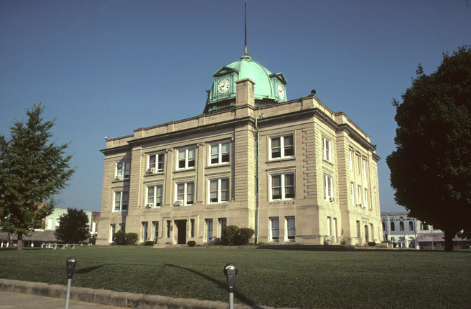

Exploring the Serenity of Spencer
- Population: Approximately 900,000 residents
- Year Incorporated: 1821
- Region: Central Indiana
- Classification: Urban
- Average Income Level: Above the state average
Spencer, a charming town in southern Indiana, offers a tranquil escape with a blend of history and natural beauty. As of 2022, here are some key details about this peaceful community:
Explore the scenic landscapes surrounding Spencer, from its parks to the nearby Owen-Putnam State Forest. With a close-knit community and a focus on preserving its heritage, Spencer provides a serene atmosphere for residents and visitors alike.
Experience the town's historic sites, enjoy outdoor activities, and embrace the peaceful ambiance that defines Spencer.